Freddy Fazbear
Oso animatrónico y mascota de Freddy Fazbear's Pizza. De noche se mueve poco y se esconde en las sombras, pero es muy peligroso: cuando se acaba la energía, él es quien termina tu turno.
Ellos siempre están ahí. Filtra por juego.
Oso animatrónico y mascota de Freddy Fazbear's Pizza. De noche se mueve poco y se esconde en las sombras, pero es muy peligroso: cuando se acaba la energía, él es quien termina tu turno.
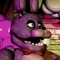
Conejo morado que toca la guitarra en el escenario. En el juego es de los más agresivos: sale pronto del escenario y llega por la puerta izquierda, así que debes cerrarla a tiempo.
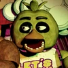
Pollo amarillo con un babero que dice «Let's Eat!!!» y su cupcake. De noche ataca desde la puerta derecha; si la ves ahí, ciérrala antes de que entre a la oficina.
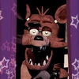
Zorro pirata que no está en el escenario, sino en su propio rincón, Pirate Cove, y está «fuera de servicio». Si lo vigilas con las cámaras se ralentiza; si lo descuidas, corre por el pasillo y ataca.
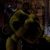
Versión dorada de Freddy y uno de los mayores misterios de la saga. Solo aparece si el póster del pasillo cambia al suyo y cierras el monitor justo después; no se sabe si es real o una alucinación.
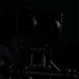
Endoesqueleto diseñado como esqueleto interno de los trajes de los cuatro animatrónicos originales. En el primer juego no ataca: solo se ve en el Backstage, junto a cabezas y otras piezas.
Versión dañada del Freddy original, guardada en Parts/Service y una de las menos destrozadas. Como los demás, intenta llegar a la oficina; la máscara de Freddy engaña su sistema.
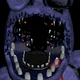
Muy deteriorado: sin cara ni brazo izquierdo, deja ver su cabeza de endoesqueleto. Es de los más activos del juego y se detiene si te pones la máscara a tiempo.
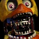
Junto con Bonnie, la más destrozada de Parts/Service. Casi solo se reconoce por su babero, su pico y sus patas. Si te pones la máscara cuando llega, se va.
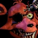
En peor estado que en el primer juego. Al salir de Parts/Service se queda frente a la oficina y la máscara no sirve contra él: hay que alumbrarlo con la linterna para reiniciarlo.
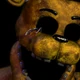
En esta entrega no puedes cometer errores con él: si lo iluminas con la linterna, la noche termina con su ataque. Su origen es incierto y se cree que fue de los primeros personajes de la franquicia.
Versión moderna y remasterizada de Freddy, con reconocimiento facial y movimiento más articulado. De día baja del escenario a convivir con los niños; de noche suele ser el último en moverse.
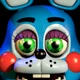
Homólogo moderno de Bonnie: más pequeño y de color más claro. Siempre es el primero en salir del escenario, incluso en la primera noche, y puede llegar pronto a tu oficina.
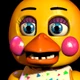
Versión Toy de Chica, más pequeña y de aspecto más femenino; su babero dice «Let's Party». Cuando sale del escenario desaparecen su pico y sus ojos, y deja ver su endoesqueleto.
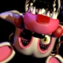
Antes llamada Toy Foxy. Se dice que funcionaba bien hasta que los niños la desarmaban y volvían a armar, de ahí su nombre (mutilada). Está destrozada pero se mueve, y una radiofrecuencia delata dónde está.
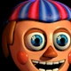
Personaje nuevo del segundo juego que reparte globos en el Game Area. No te mata: entra a la oficina, se ríe y apaga la linterna y las luces, dejándote expuesto a los demás.
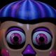
También llamada Balloon Girl; es un recolor morado de Balloon Boy. En este juego aparece al azar bajo el escritorio y no hace daño. En Ultimate Custom Night sí se vuelve un obstáculo.
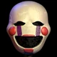
Marioneta nueva que regala premios a los niños desde una caja de música en la Prize Corner. Si no le das cuerda a la caja, sale y es imposible evitar su ataque. Se cree que tiene un pasado trágico.
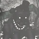
Alucinación rara que aparece en Parts/Service: un Freddy casi negro, de ojos blancos, desplomado en el suelo. Si lo miras demasiado, el juego se congela.
También conocido como Shadow Bonnie. Era una extraña alucinación de FNaF 2 que cerraba el juego, y es protagonista de los minijuegos del final bueno de FNaF 3. Usa el modelo de Toy Bonnie, oscurecido.
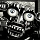
Endoesqueleto diseñado para los animatrónicos Withered y algunos Toy durante los años 80. Igual que Endo-01, no es un antagonista en el segundo juego.
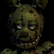
El único animatrónico real del tercer juego: un traje de conejo muy deteriorado, hallado 30 años después y puesto en Fazbear's Fright. Después se reveló que dentro estaba William Afton. Lo atrae el ruido.
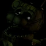
Alucinación de un Freddy dañado, con cables saliendo de los ojos. Empieza a aparecer en la noche 3 por el pasillo; si lo miras mucho tiempo, te ataca.
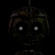
La alucinación más activa, incluso desde la noche 2. Aparece casi en todas partes, salvo los ductos; si lo miras demasiado, entra a la oficina y te da un susto.
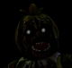
Alucinación de Chica que comienza en la noche 3. Aparece en la pantalla de la máquina arcade de la cámara 07 y hay que evitar mirarla por mucho tiempo.
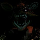
Es Foxy con su modelo viejo de FNaF 2, sin la mitad del brazo derecho. Surge siempre en la esquina izquierda de la oficina y ataca en cuanto lo ves de frente.
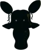
Versión fantasma de Mangle, activa desde la noche 2. Si la miras demasiado, su ruidosa radiofrecuencia provoca errores de audio en el juego.
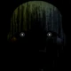
Considerado el Phantom más peligroso. Tapa tu vista y no te deja usar las cámaras ni el panel de mantenimiento, dejándote expuesto a ataques como el de Springtrap.
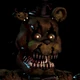
Versión pesadilla de Freddy; actúa desde la primera noche. Tres Freddles pequeños aparecen sobre la cama: si no los ahuyentas con la linterna a tiempo, Nightmare Freddy te ataca.
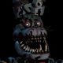
Intenta entrar siempre por la izquierda y se anuncia con su respiración. Si lo iluminas en la puerta ataca, así que debes cerrarla cuando lo oigas.
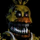
Va siempre con su Cupcake, que también puede atacar. Se acerca por la derecha: si la alumbras en la puerta ataca, o manda a su cupcake a tu cuarto.
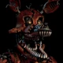
Con su garfio pirata, puede entrar al cuarto y esconderse en el armario. Si no lo cierras y le prestas atención, sale y te ataca.
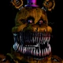
Personaje nuevo, versión pesadilla de Fredbear. Empieza tarde, hacia la noche 5, y es muy rápido e impredecible: puede estar en los pasillos, la cama o el armario.
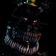
Es Nightmare Fredbear en color negro y parcialmente transparente. Es aún más activo y peligroso; su actividad empieza en la noche 7.
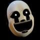
Agregado en la edición de Halloween, reemplaza a Nightmare. Versión de Puppet con brazos que parecen tentáculos; puede aparecer en pasillos, cama o armario.
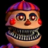
Agregado en la edición de Halloween, reemplaza a Plushtrap. Tiene su propio minijuego, «Fun with Balloon Boy»: debes detenerlo sobre la X antes de que se pase.
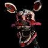
Agregada en la edición de Halloween; reemplaza a Nightmare Foxy y se comporta igual: entra al armario y debes encerrarla hasta que desaparezca.
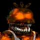
Variante de Halloween de Nightmare Chica: emana una luz naranja desde adentro, no tiene ojos y su cupcake fue cambiado por una calabaza.
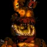
Variante de Halloween de Nightmare Bonnie, con luz naranja y sin ojos. Se mueve por el pasillo izquierdo y hay que cerrar la puerta. Es el único no canónico.
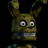
Peluche de Springtrap que puede moverse. Aparece solo en su minijuego «Fun with Plushtrap»: debes detenerlo justo en la X; si se pasa, ataca.
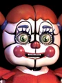
Animatrónica con aspecto de payaso. Según la historia, durante una fiesta en Circus Baby's Pizza World una niña murió por su causa. Guía al técnico hasta la Scooping Room en la noche final.
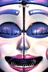
Bailarina de aspecto humano que reacciona al sonido. En la noche 2 debes cruzar su galería despacio y detenerte cuando sube el volumen de su música.
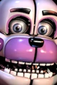
Otra versión de Freddy; lleva a Bon-Bon, su marioneta de mano. En la Breaker Room se aleja con un audio, y en Parts/Service debes presionar botones para darle mantenimiento.
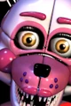
Versión de Foxy que puede dividir su cara hasta en 6 partes. Se evita con el flash: cada vez que lo ves, debes dejar de avanzar un momento. En la noche 3 te captura.
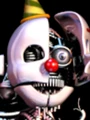
Animatrónico secreto formado por los endoesqueletos de Circus Baby, Ballora, Funtime Freddy, Funtime Foxy y Bon-Bon. Al final usa el cuerpo del técnico como disfraz para escapar.
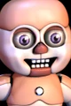
Animatrónicos pequeños con aspecto de bebé de juguete. En la noche 2 debes evitarlos cerrando la lámina de metal que tienes enfrente.
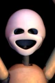
Bailarinas diminutas, como maniquíes de madera con tutú lavanda. En la noche 4 suben al traje y aflojan los seguros; para frenarlas hay que sacudir el traje con cuidado.
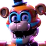
Versión glamrock de Freddy en el Mega Pizzaplex. En el juego acompaña y ayuda a Gregory, el protagonista, mientras explora el lugar.
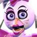
Animatrónica de la banda glamrock del Mega Pizzaplex, junto a Freddy, Roxanne Wolf y Montgomery Gator.
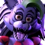
Loba de la banda glamrock del Mega Pizzaplex, junto a Freddy, Chica y Montgomery Gator.
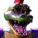
Cocodrilo de la banda glamrock del Mega Pizzaplex, junto a Freddy, Chica y Roxanne Wolf.
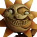
Cuidador de la guardería del Mega Pizzaplex en su modo de día; su otra mitad es Luna.
Cuidador de la guardería del Mega Pizzaplex en su modo de noche; su otra mitad es Sol.
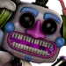
Animatrónico DJ del Mega Pizzaplex, versión de Music Man.
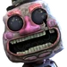
Versión de cuerda de Music Man, otro animatrónico del Mega Pizzaplex.